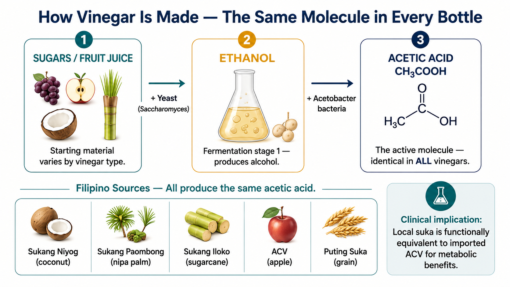
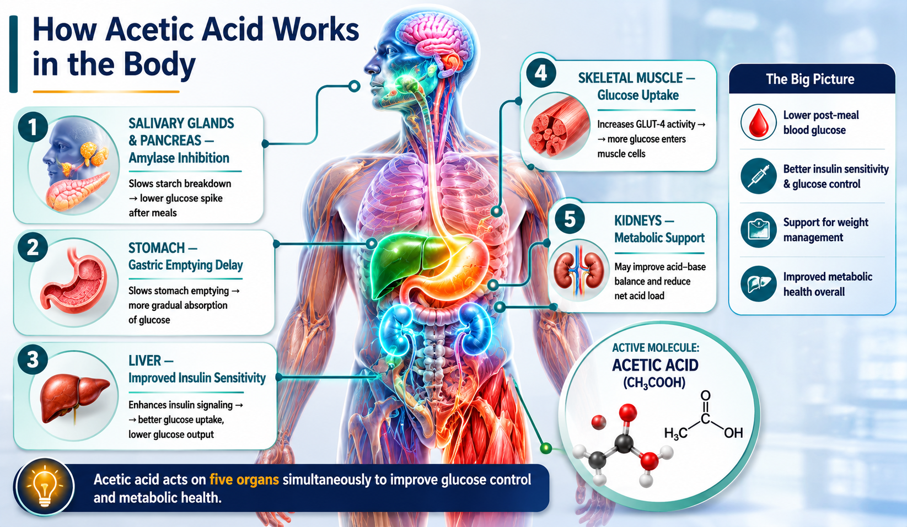
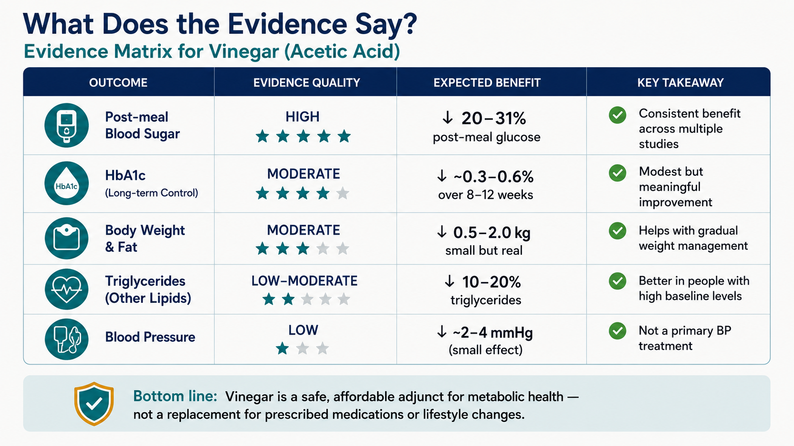
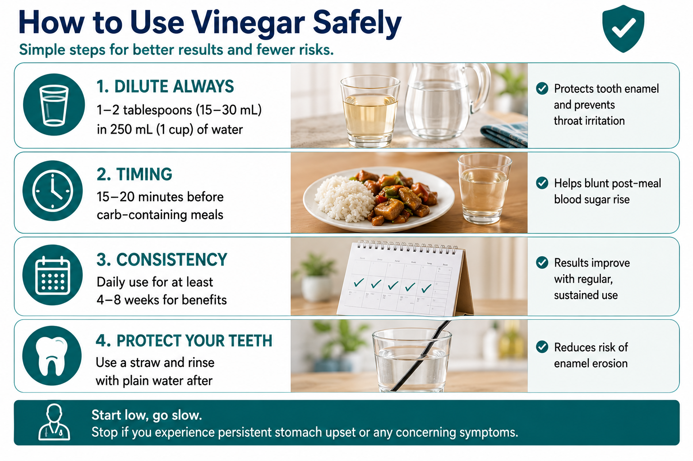
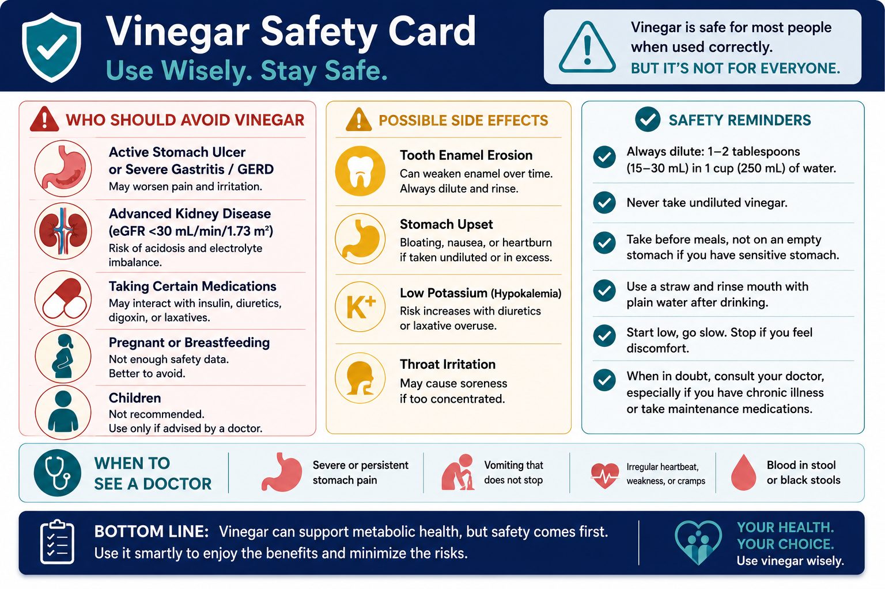

The Core MoleculeAng Pangunahing MolekyulAng Panguna nga MolekyulIng Pangunahing Molekyul
- All vinegars share one active ingredient: acetic acid (CH₃COOH)Lahat ng suka ay may iisang aktibong sangkap: acetic acid (CH₃COOH)Ang tanan nga suka adunay usa ka aktibong sangkap: acetic acid (CH₃COOH)Ding suka ngan isa lang ing aktibung sangkap: acetic acid (CH₃COOH)
- Typical acetic acid content: 4–8% (ACV: ~5–6%)Karaniwang nilalaman ng acetic acid: 4–8% (ACV: ~5–6%)Kasagarang sulod sa acetic acid: 4–8% (ACV: ~5–6%)Karaniwang laman ning acetic acid: 4–8% (ACV: ~5–6%)
- Everything else — flavor, color, "mother" — is secondaryAng lahat ng iba — lasa, kulay, "mother" — ay pangalawa lamangAng uban pang bahin — lami, kolor, "mother" — sekundaryong butang na lamangDing aliwang bagya — lasa, kulay, "mother" — sekundaryung bagya na rin
How Vinegar Is MadePaano Ginagawa ang SukaUnsaon Paghimo ang SukaPanung Ginagawa ing Suka
- Fermentation pathway: glucose → ethanol (yeast) → acetic acid (Acetobacter bacteria)Proseso ng pagbuburo: glucose → ethanol (lebadura) → acetic acid (bakteryang Acetobacter)Agianan sa fermentation: glucose → ethanol (lebadura) → acetic acid (Acetobacter nga bakterya)Dalan ning fermentation: glucose → ethanol (lebadura) → acetic acid (Acetobacter a bakterya)
- ACV: fermented apple juice, double-fermentedACV: fermentadong katas ng mansanas, dalawang beses na pinagburoACV: gi-ferment nga katas sa mansanas, doble ang pagka-fermentACV: fermentadung katas ning mansanas, makaduang pinagburo
- "The mother""Ang mother""Ang mother""Ing mother" = cellulose matrix + residual Acetobacter= cellulose matrix + natirang Acetobacter= cellulose matrix + nahibilin nga Acetobacter= cellulose matrix + nabilin a Acetobacter
- Contains: trace proteins, enzymes, amino acidsNaglalaman: kaunting protina, enzymes, amino acidsNaglalaman: gamay nga protina, enzymes, amino acidsKalamnan: kaunteng protina, enzymes, amino acids
- What it is NOT: a proven probiotic or cure-allHindi ito: isang napatunayang probiotic o gamot sa lahatDili kini: usa ka napatunayang probiotic o lunas sa tananEya niti: isang napatunayang probiotic o gamut sa ngan
- Verdict: modest prebiotic/postbiotic signal; not the primary mechanismHatol: maliit na prebiotic/postbiotic na senyales; hindi ang pangunahing mekanismoHukom: gamay nga prebiotic/postbiotic nga signal; dili ang panguna nga mekanismoHatol: maliit a prebiotic/postbiotic a signal; eya ing pangunahing mekanismo
What "Organic, Unfiltered, with Mother" MeansAno ang Ibig Sabihin ng "Organic, Hindi Sinala, na may Mother"Unsa ang Kahulogan sa "Organic, Wala Nasala, uban ang Mother"Nanu ing Kahulugan ning "Organic, Eya Sinala, kasama ing Mother"
- Organic:Organic:Organic:Organic: no synthetic pesticides — minor relevance at vinegar concentrationswalang synthetic na pesticides — maliit na kahalagahan sa konsentrasyon ng sukawalay synthetic nga pesticides — gamay nga kalabotan sa konsentrasyon sa sukaala synthetic a pesticides — maliit a kaugnayan king konsentrasyon ning suka
- Unfiltered:Hindi sinala:Wala nasala:Eya sinala: retains the "mother" — mild postbiotic benefitpinapanatili ang "mother" — banayad na postbiotic na benepisyogitago ang "mother" — hinay nga postbiotic nga benepisyoingatan ing "mother" — malumo a postbiotic a benepisyo
- With mother:Na may mother:Uban ang mother:Kasama ing mother: not a meaningful probiotic dose (Acetobacter is not a gut-colonizing species)hindi isang makabuluhang dosis ng probiotic (ang Acetobacter ay hindi isang uri na naninirahan sa bituka)dili usa ka makahuluganon nga dosis sa probiotic (ang Acetobacter dili usa ka klase nga nagpuyo sa tinai)eya isang makabuluhang dosis ning probiotic (ing Acetobacter eya isang uri a nanistaran king bituka)

Filipino Vinegars — Locally RelevantMga Sukang Pilipino — Lokal na AngkopMga Sukang Pilipino — Lokal nga AngayDing Sukang Pilipino — Lokal a Angkop
| Vinegar TypeUri ng SukaKlase sa SukaKlase ning Suka | Filipino NamePangalang PilipinoNgalan sa PilipinoLagyu king Pilipino | SourcePinagkukunanGigikananGigibuan | Acetic AcidAcetic AcidAcetic AcidAcetic Acid | NotesMga TalaMga NotaDing Tala |
|---|---|---|---|---|
| Nipa palm | Sukang paombong | Nipa palm sapKatas ng nipa palmKatas sa nipa palmKatas ning nipa palm | ~4–5% | Most common; mild flavorPinakakaraniwan; banayad na lasaLabing sagad; hinay nga lamiPinakamadalas; malumo a lasa |
| Sugarcane | Sukang iloko | Sugarcane juiceKatas ng tuboKatas sa tuboKatas ning tubu | ~4–6% | Ilocos region staplePangunahing pagkain sa rehiyon ng IlocosPangunahing pagkaon sa rehiyon sa IlocosPangunahing pagkain king rehiyon ning Ilocos |
| Coconut | Sukang niyog / tuba | Coconut sapKatas ng niyogKatas sa niyogKatas ning niyug | ~4–5% | Cloudy; contains "mother" naturallyMalabo; natural na naglalaman ng "mother"Mabug-at; natural nga adunay "mother"Malabo; natural a kalamnan ning "mother" |
| Apple cider | ACV | Apple juiceKatas ng mansanasKatas sa mansanasKatas ning mansanas | ~5–6% | Imported; more expensiveImported; mas mahalImported; mas mahalImported; mas mahal |
| White distilled | Puting suka | Grain alcoholAlkohol mula sa butilAlkohol gikan sa lugasAlkohol manibat king butil | ~5% | Cheapest; no polyphenolsPinakamura; walang polyphenolsLabing barato; walay polyphenolsPinakamura; ala polyphenols |
| Balsamic | Balsamic | Grape mustKatas ng ubasKatas sa ubasKatas ning ubas | ~4–6% | Highest polyphenol contentPinakamataas na nilalaman ng polyphenolPinakataas nga sulod sa polyphenolPinakamataas a laman ning polyphenol |
Clinical implication:Klinikal na implikasyon:Klinikal nga implikasyon:Klinikal a implikasyon: Sukang paombong and sukang niyog are functionally equivalent to ACV for glycemic and metabolic effects. No strong evidence that imported ACV is superior.Ang sukang paombong at sukang niyog ay katumbas ng ACV pagdating sa glycemic at metabolic na epekto. Walang matibay na katibayan na mas mahusay ang imported na ACV.Ang sukang paombong ug sukang niyog katumbas sa ACV pagdating sa glycemic ug metabolic nga epekto. Walay lig-on nga ebidensya nga mas maayo ang imported nga ACV.Ing sukang paombong at sukang niyog katumbas ning ACV king glycemic at metabolic a epekto. Ala matatag a katibayan a mas maigi ing imported a ACV.

| MechanismMekanismoMekanismoMekanismo | Organ / SystemOrgan / SistemaOrgan / SistemaOrgan / Sistema | What HappensAno ang NangyayariUnsa ang NahitaboNanu ing Mangyari | Clinical ResultKlinikal na ResultaKlinikal nga ResultaKlinikal a Resulta |
|---|---|---|---|
| Amylase inhibitionPagpigil ng amylasePagpugong sa amylasePagpigil king amylase | Salivary glands, pancreasMga glandula ng laway, pancreasMga glandula sa laway, pancreasMga glandula ning laway, pancreas | Acetic acid inhibits α-amylase → slows starch breakdownAng acetic acid ay nagpipigil ng α-amylase → nagpapabagal ng pagsira ng almirolAng acetic acid nagpugong sa α-amylase → nagpahinay sa paghiwa sa almidonIng acetic acid pigpigilan ne ing α-amylase → mapahinay ing pagsira ning almirol | Lower postprandial glucose spikeMas mababang pagtaas ng asukal pagkatapos kumainMas ubos nga pagtaas sa asukar human sa pagkaonMababa rang pagtaas ning asukal kasunud ning pamangan |
| Gastric emptying delayPagkaantala ng paglabas ng pagkain mula sa tiyanPagkaluay sa paggawas sa pagkaon gikan sa tiyanPagkaatrasu ning paglual ning pamangan king tiyan | StomachTiyanTiyanTiyan | Acetic acid slows gastric motility → prolongs food transitAng acetic acid ay nagpapabagal ng galaw ng tiyan → nagpapalawak ng oras ng pagtunaw ng pagkainAng acetic acid nagpahinay sa paglihok sa tiyan → nagpatagal sa oras sa pagtunaw sa pagkaonIng acetic acid mapahinay ing galaw ning tiyan → maragdag ing oras ning pagtunaw ning pamangan | Extended satiety; blunted glucose AUCMas matagal na pakiramdam ng pagkabusog; mas mababang pagtaas ng asukal sa dugoMas dugay nga pagbati nga busog; mas ubos nga pagtaas sa asukar sa dugoMatagal a pakiramdam ning kasawahan; mas mababa ing pagtaas ning asukal king dala |
| AMPK activationPag-activate ng AMPKPag-activate sa AMPKPag-activate ning AMPK | Skeletal muscle, liverKalamnan, atayMga kalamnan, atayKalamnan, atay | AMP kinase activated → ↑ GLUT4 translocation, ↑ glucose uptakeAng AMP kinase ay na-activate → ↑ paglipat ng GLUT4, ↑ pagtanggap ng glucose ng kalamnanAng AMP kinase na-activate → ↑ paglihok sa GLUT4, ↑ pagsuhop sa glucose sa kalamnanIng AMP kinase na-activate → ↑ paglipat ning GLUT4, ↑ pagtanggap ning glucose ning kalamnan | Improved insulin sensitivityMas mahusay na pagtugon ng katawan sa insulinMas maayo nga pagtubag sa insulinMas mayap a pagtugon ning katawan king insulin |
| Hepatic lipogenesis suppressionPagpigil ng paggawa ng taba sa atayPagpugong sa paghimo sa tambok sa atayPagpigil ning paggawa ning taba king atay | LiverAtayAtayAtay | AMPK → ↓ SREBP-1c → ↓ de novo fat synthesisAMPK → ↓ SREBP-1c → ↓ pagbuo ng bagong taba sa atayAMPK → ↓ SREBP-1c → ↓ paghimo sa bag-ong tambok sa atayAMPK → ↓ SREBP-1c → ↓ paggawa ning bagung taba king atay | Lower TG, reduced hepatic fat (MASLD)Mas mababang TG, mas kaunting taba sa atay (MASLD)Mas ubos nga TG, mas gamay nga tambok sa atay (MASLD)Mas mababa ing TG, mas kaunti ing taba king atay (MASLD) |
| GLP-1 stimulationPagpukaw ng GLP-1Pagpukaw sa GLP-1Pagpukaw ning GLP-1 | Enteroendocrine L-cellsMga L-cell ng bitukaMga L-cell sa tinaiMga L-cell ning bituka | Delayed gastric emptying → ↑ GLP-1 releasePagkaantala ng paglabas ng pagkain mula sa tiyan → ↑ paglabas ng GLP-1Pagkaluay sa paggawas sa pagkaon gikan sa tiyan → ↑ paggawas sa GLP-1Pagkaatrasu ning paglual ning pamangan king tiyan → ↑ paglual ning GLP-1 | Insulin secretion, satiety signalingPaglabas ng insulin, pagbibigay ng signal ng pagkabusogPaggawas sa insulin, sinyales sa pagkabusogPaglual ning insulin, senyal ning kasawahan |
| Ghrelin suppressionPagpigil ng ghrelin (hormone ng gutom)Pagpugong sa ghrelin (hormone sa gutom)Pagpigil ning ghrelin (hormone ning gutom) | Gastric fundusItaas na bahagi ng tiyanIbabaw nga bahin sa tiyanIbabaw a babie ning tiyan | Distension + acid exposure → ↓ ghrelinPagbuo ng tiyan + pagkalantad sa asido → ↓ ghrelinPagbuak sa tiyan + pagkaladlad sa asido → ↓ ghrelinPagbuak ning tiyan + pagkalantad king asidu → ↓ ghrelin | Reduced hungerMas kaunting pakiramdam ng gutomMas gamay nga gibati nga gutomMas kaunting pakiramdam ning gutom |
| Alkaline ash effectAlkalinisasyon ng dugo at ihiAlkaline nga epekto sa dugo ug ihiAlkalinisasyon ning dala at ihi | Kidney, bloodBato, dugoBato, dugoBatu, dala | Acetic acid metabolized → acetate → bicarbonateAng acetic acid ay na-metabolize → acetate → bicarbonateAng acetic acid gi-metabolize → acetate → bicarbonateIng acetic acid na-metabolize → acetate → bicarbonate | Net alkalinizing effect; ↑ urine pH; ↓ urate reabsorptionNagiging mas alkaline ang katawan; ↑ pH ng ihi; ↓ pagsipsip ng urate pabalik sa dugoMas alkaline ang lawas; ↑ pH sa ihi; ↓ pagsuhop pag-usab sa urateMagiging mas alkaline ing katawan; ↑ pH ning ihi; ↓ pagsipsip ning urate pabalik king dala |
| Gut microbiome modulationPagpapabuti ng mikrobyo sa bitukaPagpauswag sa mga mikrobyo sa tinaiPagpapayap ning mga mikrobyo king bituka | ColonMalaking bitukaDakong tinaiMaragul a bituka | Acetate = short-chain fatty acid → colonocyte fuel, prebioticAng acetate = maikling fatty acid → pagkain ng mga selula ng bituka, prebioticAng acetate = mubo nga fatty acid → pagkaon sa mga selula sa tinai, prebioticIng acetate = maikli a fatty acid → pamangan ning mga selula ning bituka, prebiotic | Improved microbial diversity (limited human data)Mas napagsama-samang uri ng mikrobyo sa bituka (limitado pa ang datos sa tao)Mas nagkalain-laing klase sa mikrobyo sa tinai (limitado pa ang datos sa tawo)Mas malawak a uri ning mikrobyo king bituka (limitadu pa ing datos king tau) |

| Patient TypeUri ng PasyenteKlase sa PasyenteKlase ning Pasyente | Mechanism ActiveAktibong MekanismoAktibong MekanismoAktibong Mekanismo | Evidence LevelAntas ng EbidensyaLebel sa EbidensyaAntas ning Ebidensya | Expected BenefitInaasahang BenepisyoGipaabut nga BenepisyoAsahan Benepisyo | RecommendationRekomendasyonRekomendasyonRekomendasyon |
|---|---|---|---|---|
| Pre-diabetes / IGTPre-diabetes / IGTPre-diabetes / IGTPre-diabetes / IGT | Amylase inhibition + AMPKAmylase inhibition + AMPKAmylase inhibition + AMPKAmylase inhibition + AMPK | RCT (moderate) | FBS ↓5–15 mg/dL; 2-hr OGTT ↓ | ✅ GREEN — use✅ BERDE — gamitin✅ BERDE — gamiton✅ BERDE — gamitin |
| T2DM (oral agents)T2DM (oral na gamot)T2DM (oral nga tambal)T2DM (oral a gamut) | Amylase inhibition + GLP-1Amylase inhibition + GLP-1Amylase inhibition + GLP-1Amylase inhibition + GLP-1 | RCT (moderate) | HbA1c ↓0.1–0.3%; PPG ↓ | ✅ GREEN — use; monitor for hypoglycemia if on sulfonylurea✅ BERDE — gamitin; subaybayan ang hypoglycemia kung gumagamit ng sulfonylurea✅ BERDE — gamiton; bantayan ang hypoglycemia kung nag-inom og sulfonylurea✅ BERDE — gamitin; bantayan ing hypoglycemia nung gumagamit sulfonylurea |
| Metabolic syndromeMetabolic syndromeMetabolic syndromeMetabolic syndrome | AMPK + lipogenesis suppressionAMPK + lipogenesis suppressionAMPK + lipogenesis suppressionAMPK + lipogenesis suppression | RCT (moderate) | TG ↓; weighttimbangtimbangtimbang ↓1–2 kg at 12 wks | ✅ GREEN — use✅ BERDE — gamitin✅ BERDE — gamiton✅ BERDE — gamitin |
| NAFLD / MASLDNAFLD / MASLDNAFLD / MASLDNAFLD / MASLD | Hepatic AMPKHepatic AMPKHepatic AMPKHepatic AMPK | RCT (small, promisingmaliit, promisinggamay, promisingmaliit, promising) | Liver enzymes ↓; hepatic fat ↓ on imagingLiver enzymes ↓; hepatic fat ↓ sa imagingLiver enzymes ↓; hepatic fat ↓ sa imagingLiver enzymes ↓; hepatic fat ↓ king imaging | ✅ GREEN — use✅ BERDE — gamitin✅ BERDE — gamiton✅ BERDE — gamitin |
| Gout / hyperuricemiaGout / hyperuricemiaGout / hyperuricemiaGout / hyperuricemia | Alkaline ash → ↑ urine pH → ↑ urate excretionAlkaline ash → ↑ urine pH → ↑ urate excretionAlkaline ash → ↑ urine pH → ↑ urate excretionAlkaline ash → ↑ urine pH → ↑ urate excretion | Mechanistic + observationalMechanistic + observationalMechanistic + observationalMechanistic + observational | Uric acid ↓ modestlyUric acid ↓ nang kauntiUric acid ↓ gamayUric acid ↓ kaunti | ✅ GREEN — use alongside febuxostat✅ BERDE — gamitin kasabay ng febuxostat✅ BERDE — gamiton kauban ang febuxostat✅ BERDE — gamitin kasabay ning febuxostat |
| HypertriglyceridemiaHypertriglyceridemiaHypertriglyceridemiaHypertriglyceridemia | Hepatic lipogenesis ↓Hepatic lipogenesis ↓Hepatic lipogenesis ↓Hepatic lipogenesis ↓ | RCT (moderate) | TG ↓ 10–15% | ✅ GREEN — use✅ BERDE — gamitin✅ BERDE — gamiton✅ BERDE — gamitin |
| Overweight / obesitySobrang timbang / obesitySobrang timbang / obesitySobrang timbang / obesity | Satiety + GLP-1 + gastric delaySatiety + GLP-1 + gastric delaySatiety + GLP-1 + gastric delaySatiety + GLP-1 + gastric delay | RCT (moderate) | WeightTimbangTimbangTimbang ↓1–2 kg/12 wks | ✅ GREEN — adjunct only✅ BERDE — pantulong lamang✅ BERDE — dugang lamang✅ BERDE — pandugang lamang |
| CKD Stage 1–2 (eGFR >60)CKD Stage 1–2 (eGFR >60)CKD Stage 1–2 (eGFR >60)CKD Stage 1–2 (eGFR >60) | All mechanisms intactLahat ng mekanismo ay buoTanang mekanismo buo paAting mekanismo buo | Limited CKD-specific RCTLimitadong CKD-specific RCTLimitado nga CKD-specific RCTLimitadu CKD-specific RCT | Likely safe and beneficialMalamang ligtas at kapaki-pakinabangLagmit luwas ug mapuslanonMalagud ligtas at kapaki-pakinabang | 🟡 YELLOW — use at standard dose; monitor K⁺🟡 DILAW — gamitin sa standard na dosis; subaybayan ang K⁺🟡 DALAG — gamiton sa standard nga dosis; bantayan ang K⁺🟡 DALAG — gamitin king standard a dosis; bantayan ing K⁺ |
| CKD Stage 3 (eGFR 30–59)CKD Stage 3 (eGFR 30–59)CKD Stage 3 (eGFR 30–59)CKD Stage 3 (eGFR 30–59) | Alkaline ash helpful for metabolic acidosisAlkaline ash nakakatulong sa metabolic acidosisAlkaline ash makatabang sa metabolic acidosisAlkaline ash makatulong king metabolic acidosis | Very limitedNapaka-limitadoKaayo limitadoMasyadung limitadu | May help bicarb; possible K⁺ loadMaaaring tumulong sa bicarb; posibleng K⁺ loadMahimong makatabang sa bicarb; posible K⁺ loadMalagud makatulong king bicarb; posible K⁺ load | 🟡 YELLOW — low dose (1 tbsp); check K⁺ and bicarb q4wks🟡 DILAW — mababang dosis (1 tbsp); suriin ang K⁺ at bicarb tuwing 4 na linggo🟡 DALAG — ubos nga dosis (1 tbsp); susiha ang K⁺ ug bicarb matag 4 ka semana🟡 DALAG — mabang dosis (1 tbsp); suriing K⁺ at bicarb q4wks |
| CKD Stage 4–5 (eGFR <30)CKD Stage 4–5 (eGFR <30)CKD Stage 4–5 (eGFR <30)CKD Stage 4–5 (eGFR <30) | K⁺ load; acid-base unpredictabilityK⁺ load; hindi mahulaan ang acid-baseK⁺ load; dili matag-an ang acid-baseK⁺ load; ali masaguli acid-base | No supporting RCTWalang sumusuportang RCTWalay suportang RCTAla suportang RCT | Risk > benefitPanganib > benepisyoPeligro > benepisyoPeligro > benepisyo | 🔴 RED — avoid without nephrology clearance🔴 PULA — iwasan nang walang clearance mula sa nephrologist🔴 PULA — likayi kung walay clearance gikan sa nephrologist🔴 PULA — iwasan nung ala clearance king nephrologist |
| ESKD / HemodialysisESKD / HemodialysisESKD / HemodialysisESKD / Hemodialysis | Electrolyte instability; no studied benefitKawalang-katatagan ng elektrolyte; walang napatunayan na benepisyoDili lig-on nga electrolyte; walay natuklasang benepisyoAli lig-on electrolyte; ala napanibatan a benepisyo | No RCTWalang RCTWalay RCTAla RCT | Not studied; unpredictableHindi pa siniyasat; hindi mahulaanWala pa matun-i; dili matag-anAli pa siniyasat; ali masaguli | 🔴 RED — avoid🔴 PULA — iwasan🔴 PULA — likayi🔴 PULA — iwasan |
| GERD / esophagitisGERD / esophagitisGERD / esophagitisGERD / esophagitis | Direct acid injuryDirektang pinsala ng asidoDirektang samad sa asidoDirektang pinsala ning asidu | Mechanistic harmMechanistic harmMechanistic harmMechanistic harm | Worsens symptomsNagpapalala ng sintomasNagpasamot sa simtomaNagpapalala ning sintomas | 🔴 RED — contraindicated🔴 PULA — contraindicated🔴 PULA — contraindicated🔴 PULA — contraindicated |
| GastroparesisGastroparesisGastroparesisGastroparesis | Worsens delayed emptyingNagpapalala ng naantalang paglalabas ng pagkain sa tiyanNagpasamot sa hinay nga pag-agi sa tiyanNagpapalala ning maluad a pagluwas ning makan | Mechanistic harmMechanistic harmMechanistic harmMechanistic harm | Nausea, vomiting, glucose instabilityPagduduwal, pagsusuka, hindi stable ang glucosePagdulaw, pagsuka, dili lig-on ang glucosePagduwal, pagsuka, ali lig-on glucose | 🔴 RED — contraindicated🔴 PULA — contraindicated🔴 PULA — contraindicated🔴 PULA — contraindicated |
| Insulin-treated DMDM na ginagamot ng insulinDM nga ginatratar og insulinDM a ginagamutan ning insulin | Additive glucose-loweringAdditive glucose-loweringAdditive glucose-loweringAdditive glucose-lowering | Case reportsMga case reportMga case reportMga case report | Hypoglycemia riskPanganib ng hypoglycemiaPeligro sa hypoglycemiaPeligro ning hypoglycemia | 🔴 RED — avoid or use only under supervision🔴 PULA — iwasan o gamitin lamang sa ilalim ng pangangasiwa ng doktor🔴 PULA — likayi o gamiton lamang ubos sa pag-atiman sa doktor🔴 PULA — iwasan o gamitin lamang king pamamatnubay ning doktor |
| Dental erosion riskPanganib ng pagkasira ng ngipinPeligro sa pagkaguba sa ngiponPeligro ning pagkasira ning ngipin | Direct acid to enamelDirektang asido sa enamel ng ngipinDirektang asido sa enamel sa ngiponDirektang asidu king enamel ning ngipin | ObservationalObservationalObservationalObservational | Enamel demineralizationDemineralization ng enamelDemineralization sa enamelDemineralization ning enamel | 🔴 RED — never undiluted; rinse mouth after🔴 PULA — huwag gamitin nang walang dilim; banlawan ang bibig pagkatapos🔴 PULA — ayaw gamiton nga walay pagtunaw; hugasi ang baba human🔴 PULA — ding gamitin nung ali pa dilawan; banlawan ing agang magkatapos |
Key Questions & AnswersMga Pangunahing Tanong at SagotMga Panguna nga Pangutana ug TubagMaragul a Tanungan at Sagut
Is ACV Right For Me?Angkop ba ang ACV Para sa Akin?Angay ba ang ACV Para Kanako?Angkop ba ing ACV Para Kaku?
Answer 4 quick questions for a personalized recommendation.Sagutin ang 4 na mabilis na tanong para sa personalized na rekomendasyon.Tubaga ang 4 ka paspas nga pangutana alang sa personalized nga rekomendasyon.Sagutin ing 4 a mabilis a tanungan para king personalized a rekomendasyon.
Dose & Timing — The Most Important BoxDosis at Tamang Oras — Ang Pinakamahalagang KahonDosis ug Panahon — Ang Pinakaimportanteng KahonDosis at Tamang Oras — Ing Pinakamayalaga Kahon
DOSE:DOSIS:DOSIS:DOSIS:
- Standard studied dose: 15–30 mL (1–2 tablespoons) per dayKaraniwang dosis na pinag-aralan: 15–30 mL (1–2 kutsara) bawat arawSumbanan nga dosis nga gistudy: 15–30 mL (1–2 kutsara) matag adlawKaraniwang dosis a pinag-aralan: 15–30 mL (1–2 kutsara) para aldo
- Dilute in at least 240 mL (1 full glass) of water — NEVER undilutedPalabnawin sa hindi bababa sa 240 mL (1 buong basong) tubig — HUWAG KAILANMAN nang walang paghahaloItunaw sa labing menos 240 mL (1 bug-os nga baso) tubig — DILI gayud walay paghaloPalabnawin king labing minsan 240 mL (1 buong basong) danum — EIWAN LANG mag-inum nang diretso
TIMING:TAMANG ORAS:PANAHON:TAMANG ORAS:
- Take 10–15 minutes BEFORE your largest meal of the day (typically lunch or dinner in Filipino households)Inumin 10–15 minuto BAGO ang pinakamalaking pagkain ng araw (karaniwan ay tanghalian o hapunan sa mga pamilyang Pilipino)Inuma 10–15 minuto ANTES sa pinakadako nga pagkaon sa adlaw (kasagaran sa paniudto o panihapon sa mga panimalay nga Pilipino)Iinum 10–15 minuto BAGO ing pinakamayad a kalan ning aldo (karaniwan tanghali o apun king mga pamiliyang Pilipino)
- This is when glycemic blunting is most effectiveIto ang oras na pinaka-epektibo ang pagpapababa ng asukal sa dugoKini ang panahon nga labing epektibo ang pagpugong sa pagsaka sa asukal sa dugoIting oras a pinaka-epektibo ing pagpababa ning asukar king dugu
- Morning "ACV tonic on empty stomach" is culturally popular but NOT the optimal timing for metabolic benefitAng umaga na "ACV tonic sa walang laman na tiyan" ay sikat sa kultura ngunit HINDI ang pinakamainam na oras para sa metabolic na benepisyoAng buntag nga "ACV tonic sa walay sulod nga tiyan" sikat sa kultura apan DILI ang labing maayo nga panahon para sa metabolic nga benepisyoIng "ACV tonic king malang sikmura" sikat king kultura ngan EYA ing pinakamayad na oras para sa metabolic na benepisyo
START LOW:MAGSIMULA SA MABABA:SUGDI SA GAMAY:MAGSIMULA SA MABABA:
- Begin with 1 tablespoon (15 mL) for the first 2 weeksMagsimula sa 1 kutsara (15 mL) sa unang 2 linggoSugdi sa 1 kutsara (15 mL) sa unang 2 semanaMagsimula king 1 kutsara (15 mL) kareng mung 2 linggung
- Increase to 2 tablespoons (30 mL) only if no GI side effectsDagdagan sa 2 kutsara (30 mL) lamang kung walang GI side effectsDugangan sa 2 kutsara (30 mL) kung walay GI side effectsDagdagan king 2 kutsara (30 mL) no rin GI side effects
- Do not exceed 2 tablespoons per day without physician guidanceHuwag lampasan ang 2 kutsara bawat araw nang walang gabay ng doktorAyaw lapas sa 2 kutsara matag adlaw nga walay giya sa doktorEiwan lagpasan ing 2 kutsara para aldo nang ala gabay ning doktor

Preparation Tips — Filipino KitchenMga Tip sa Paghahanda — Lutong PilipinoMga Tip sa Paghanda — Kusina nga PilipinoMga Tip king Paghanda — Kusina ning Pilipino
✅ RECOMMENDED USES:✅ INIREREKOMENDANG PAGGAMIT:✅ GIREKOMENDANG PAGGAMIT:✅ INIREKOMENDANG PAGGAMIT:
- Pre-meal drink: 1 tbsp sukang paombong or ACV in 1 large glass of waterInumin bago kumain: 1 kutsara ng sukang paombong o ACV sa 1 malaking basong tubigInumon antes mokaon: 1 kutsara nga sukang paombong o ACV sa 1 dakong baso nga tubigInum bago kumain: 1 kutsara sukang paombong o ACV king 1 maragul na basong danum
- Sawsawan substitute: mix with patis (use sparingly) instead of toyo — reduces sodiumKapalit na sawsawan: ihalo sa patis (gamitin nang konti) sa halip na toyo — nagpapababa ng sodiumSawsawan nga kailis: ihalo sa patis (gamita gamay) kaysa toyo — nagpaubos sa sodiumKapalit na sawsawan: ihalo sa patis (gamitin nang konti) imbes toyo — nagpababa ning sodium
- Ensalada dressing: 1 tbsp vinegar + calamansi + olive oilEnsalada dressing: 1 kutsara ng suka + calamansi + olive oilEnsalada dressing: 1 kutsara nga suka + calamansi + olive oilEnsalada dressing: 1 kutsara suka + calamansi + olive oil
- Kinilaw base: already a vinegar dish — counts toward daily doseKinilaw base: suka nang ang putahe — binibilang sa araw-araw na dosisKinilaw base: suka na ang pagkaon — mibilang sa adlaw-adlaw nga dosisKinilaw base: suka na ining putahe — bilang na king pang-aldong dosis
- Adobo marinade: cooking with vinegar retains some acetic acid benefitAdobo marinade: ang pagluluto gamit ang suka ay nagpapanatili ng ilang benepisyo ng acetic acidAdobo marinade: ang pagluto gamit ang suka nagpabilin ug pipila sa benepisyo sa acetic acidAdobo marinade: ing pagluto gamit suka nagpapanatili ning mangabing benepisyo ning acetic acid
- Atchara / pickled vegetables: valid delivery vehicleAtchara / atsarang gulay: katanggap-tanggap na paraan ng paghahatidAtchara / aslom nga gulay: balid nga paagi sa paghatodAtchara / atsarang gulay: katanggap-tanggap na paraan ning paghatid
⚠️ CAUTION:⚠️ BABALA:⚠️ PAHIMANGNO:⚠️ BABALA:
- Do NOT add to soy sauce-heavy dips (net sodium load too high for CKD/HTN patients)HUWAG ihalo sa mga sawsawan na maraming toyo (masyadong mataas ang sodium para sa mga pasyenteng may CKD/HTN)DILI idugang sa mga sawsawan nga daghan og toyo (labaw kaayo nga sodium alang sa mga pasyente nga adunay CKD/HTN)EIWAN ihalo king mga sawsawan a mayad toyo (sobrang taas sodium para kareng pasyenteng may CKD/HTN)
- Do NOT mix with carbonated drinks — effervescence can worsen GERDHUWAG ihalo sa mga carbonated na inumin — ang bula ay maaaring magpalala ng GERDDILI ihalo sa mga carbonated nga ilimnon — ang bubbles makapasamot sa GERDEIWAN ihalo king carbonated na inuman — ing bula makasamot king GERD
- Do NOT take alongside oral bisphosphonates (timing conflict)HUWAG inumin kasabay ng oral bisphosphonates (magkasalungat ang oras ng pag-inom)DILI inuma uban sa oral bisphosphonates (magkasumpaki ang panahon)EIWAN inuman kasabay ning oral bisphosphonates (magkasalungat ing oras)
❌ AVOID:❌ IWASAN:❌ LIKAYI:❌ ILIKHA:
- Undiluted shots — tooth enamel and esophageal erosionPag-inom nang hindi pinalabnaw — pagkasira ng enamel ng ngipin at esophagusPag-inum nga walay paghalo — pagkaguba sa enamel sa ngipon ug esophagusIinum nang alang palabnaw — pagkasira ning enamel ning ngipin at esophagus
- More than 2 tablespoons per dayHigit sa 2 kutsara bawat arawLabaw sa 2 kutsara matag adlawLabing 2 kutsara para aldo
- Use as a "detox flush" in large volumesPaggamit bilang "detox flush" sa malaking damiPaggamit isip "detox flush" sa daghang damiGamitin bilang "detox flush" king maragul a dami
Form Selection Guide — Best Choices in OrderGabay sa Pagpili ng Uri — Pinakamainam na Pagpipilian sa PagkakasunodGiya sa Pagpili sa Porma — Labing Maayong Pagpili sa PagkasunodGabay king Pagpili ning Uri — Pinakamayad na Pagpipilian king Kasunodsunud
- Sukang niyog (coconut vinegar) — contains natural "mother," widely available, affordable, localnaglalaman ng natural na "mother," malawakang makukuha, abot-kaya, lokaladunay natural nga "mother," daghan available, barato, lokalmay natural "mother," malapad makuha, abot-kaya, lokal
- Sukang paombong (nipa palm) — mild flavor, excellent for daily usemahinahong lasa, napakagaling para sa araw-araw na paggamitmalumo nga lami, maayo kaayo alang sa adlaw-adlaw nga paggamitmalumanay na lasa, mainam para sa pang-aldong paggamit
- ACV with mother (unfiltered) — equivalent benefit, higher costkatumbas na benepisyo, mas mahalkatumbas nga benepisyo, mas mahalkatumbas na benepisyo, mahal pa
- Sukang iloko (sugarcane) — acceptable, good for Ilocos region patientskatanggap-tanggap, mainam para sa mga pasyente sa rehiyon ng Ilocosacceptable, maayo alang sa mga pasyente sa rehiyon sa Ilocoskatanggap-tanggap, mainam para kareng pasyente king rehiyon ning Ilocos
- White distilled suka — no polyphenols, no mother; functional but minimalPuting distilled suka — walang polyphenols, walang mother; gumagana ngunit minimalPuting distilled suka — walay polyphenols, walay mother; functional apan minimalMaputing distilled suka — ala polyphenols, ala mother; gumagana ngan minimal
❌ AVOID for medical use:❌ IWASAN para sa medikal na paggamit:❌ LIKAYI alang sa medikal nga paggamit:❌ ILIKHA para sa medikal na paggamit:
- Balsamic vinegar — high sugar content offsets glycemic benefitBalsamic vinegar — mataas na nilalaman ng asukal ay nagpapawalang-bisa ng glycemic na benepisyoBalsamic vinegar — taas nga sulod sa asukal nagkansela sa glycemic nga benepisyoBalsamic vinegar — matas a asukar nagpapawalang-bisa ning glycemic na benepisyo
- "ACV gummies" — poor dose standardization, added sugars, no evidence base"ACV gummies" — mahinang standardisasyon ng dosis, may dagdag na asukal, walang siyentipikong batayan"ACV gummies" — pobre nga standardisasyon sa dosis, nay dugang asukal, walay ebidensya"ACV gummies" — mahinang standardisasyon ning dosis, may dagdag asukar, ala siyentipikong batayan
- ACV tablets — inconsistent acetic acid delivery; not studiedACV tablets — hindi pare-parehong paghahatid ng acetic acid; hindi pinag-aralanACV tablets — dili konsistente nga paghatod sa acetic acid; wala gistudyACV tablets — hindi pare-parehong paghatid ning acetic acid; alang pinag-aralan
Duration & Realistic ExpectationsTagal at Makatotohanang InaasahanTagal ug Realistikong mga GipaabutTagal at Makatotohanang Inaasahan
TIMELINE:TIMELINE:TIMELINE:TIMELINE:
- Weeks 1–2:Linggo 1–2:Semana 1–2:Linggung 1–2: GI adjustment phase (mild bloating normal; discontinue if pain)Yugto ng pag-aayos ng GI (kaunting pamamaga ng tiyan ay normal; itigil kung may sakit)Yugto sa pag-adjust sa GI (gamay nga pamamaga normal; ihunong kung adunay sakit)Panahon ning pag-ayus ning GI (kaunting pamamaga normal; itigil nong masakit)
- Weeks 4–6:Linggo 4–6:Semana 4–6:Linggung 4–6: Early glycemic improvement visible in FBS logsMaagang pagbabago sa glycemic na nakikita sa mga FBS logSayo nga glycemic nga pagpauswag makita sa FBS logsMaagang pagbabago sa glycemic makita king mga FBS log
- Weeks 8–12:Linggo 8–12:Semana 8–12:Linggung 8–12: Measurable HbA1c, lipid, and weight changes expectedInaasahang masusukat na pagbabago sa HbA1c, lipid, at timbangGipaabut nga masukod nga pagbabago sa HbA1c, lipid, ug timbangInaasahang masukat a pagbabago king HbA1c, lipid, at timbang
- Beyond 12 weeks:Mahigit 12 linggo:Labaw sa 12 semana:Labing 12 linggung: Maintenance; no evidence of tolerance or diminishing returnsMaintenance; walang katibayan ng tolerance o pagliit ng benepisyoMaintenance; walay ebidensya sa tolerance o pagkunhod sa benepisyoMaintenance; ala katibayan ning tolerance o pagliit ning benepisyo
WHAT TO EXPECT (based on RCT data):INAASAHANG RESULTA (batay sa datos ng RCT):ANG GIPAABUT (base sa datos sa RCT):INAASAHANG RESULTA (batay king datos ning RCT):
- FBS reduction: 5–15 mg/dLPagbaba ng FBS: 5–15 mg/dLPagkunhod sa FBS: 5–15 mg/dLPagbaba ning FBS: 5–15 mg/dL
- 2-hr postprandial glucose: 20–30 mg/dL reduction2-oras na postprandial glucose: pagbaba ng 20–30 mg/dL2-oras nga postprandial glucose: pagkunhod 20–30 mg/dL2-oras na postprandial glucose: pagbaba ning 20–30 mg/dL
- HbA1c: 0.1–0.3% reductionHbA1c: pagbaba ng 0.1–0.3%HbA1c: pagkunhod 0.1–0.3%HbA1c: pagbaba ning 0.1–0.3%
- Triglycerides: 10–15% reductionTriglycerides: pagbaba ng 10–15%Triglycerides: pagkunhod 10–15%Triglycerides: pagbaba ning 10–15%
- Weight: 1–2 kg at 12 weeksTimbang: 1–2 kg sa 12 linggoTimbang: 1–2 kg sa 12 semanaTimbang: 1–2 kg king 12 linggung
- Uric acid: modest reduction (no large RCT data)Uric acid: katamtamang pagbaba (walang malaking datos ng RCT)Uric acid: gamay nga pagkunhod (walay dakong datos sa RCT)Uric acid: katamtamang pagbaba (ala maragul na datos ning RCT)
WHAT NOT TO EXPECT:HINDI DAPAT INAASAHAN:ANG DILI KINAHANGLAN IPAABUT:EYA DAPAT INAASAHAN:
- Cure for diabetes, kidney disease, or cancerLunas para sa diabetes, sakit sa bato, o kanserTambal alang sa diabetes, sakit sa kidney, o kanserLunas para king diabetes, sakit ning batu, o kanser
- Replacement for prescribed medicationsKapalit ng mga inireseta na gamotKailis sa mga gireseta nga tambalKapalit ning mga gamot a inireseta
- Rapid or dramatic weight lossMabilis o dramatikong pagbaba ng timbangPaspas o dramatikong pagkawala sa timbangMabilis o dramatikong pagbaba ning timbang
- "Detoxification" of any organ"Detoxification" ng anumang organ"Detoxification" sa bisan unsang organ"Detoxification" ning aninumang organ

- 🚫 NEVER USE UNDILUTEDHUWAG KAILANMAN GUMAMIT NANG HINDI PALABNAWINDILI GAYUD GAMITON NGA WALAY PAGHALOEIWAN GAMITIN NANG ALANG PALABNAW — causes dental enamel erosion and esophageal injury. Always dilute in ≥240 mL water.nagdudulot ng pagkasira ng enamel ng ngipin at pinsala sa esophagus. Laging palabnawin sa ≥240 mL na tubig.nagkaguba sa enamel sa ngipon ug pinsala sa esophagus. Kanunay itunaw sa ≥240 mL tubig.nagdulot ning pagkasira ning enamel ning ngipin at pinsala king esophagus. Lagi palabnawin king ≥240 mL danum.
- 🚫 DO NOT USE if eGFR < 30 mL/min/1.73m²HUWAG GAMITIN kung ang eGFR < 30 mL/min/1.73m²DILI GAMITON kung ang eGFR < 30 mL/min/1.73m²EIWAN GAMITIN nong eGFR < 30 mL/min/1.73m² without nephrology clearance. Potassium load and acid-base unpredictability.nang walang clearance mula sa nephrology. Pag-aalala sa potassium at hindi mahulaan na acid-base.nga walay clearance sa nephrology. Kaugatan sa potassium ug dili matag-an nga acid-base.nang ala clearance king nephrology. Pag-aalala king potassium at alang matukoy a acid-base.
- 🚫 DO NOT USE if you have GERD, peptic ulcer disease, esophagitis, or a history of esophageal/gastric surgery.HUWAG GAMITIN kung ikaw ay may GERD, peptic ulcer disease, esophagitis, o kasaysayan ng operasyon sa esophagus/tiyan.DILI GAMITON kung aduna kay GERD, peptic ulcer disease, esophagitis, o kasaysayan sa operasyon sa esophagus/tiyan.EIWAN GAMITIN nong ika ay may GERD, peptic ulcer disease, esophagitis, o kasaysayan ning operasyon king esophagus/tiyan.
- 🚫 DO NOT USE if you are on insulinHUWAG GAMITIN kung ikaw ay umiinom ng insulinDILI GAMITON kung nag-insulin kaEIWAN GAMITIN nong ika ay gumagamit insulin — risk of unpredictable hypoglycemia.peligro ng hindi mahulaan na mababang asukal sa dugo.peligro sa dili matag-an nga hypoglycemia.peligro ning alang matukoy a mababang asukar king dugu.
- ⚠ CAUTION if on gliclazide, glimepiride, or other sulfonylureasMAG-INGAT kung ikaw ay umiinom ng gliclazide, glimepiride, o iba pang sulfonylureasPANALIPDAN kung nag-inom ka gliclazide, glimepiride, o ubang sulfonylureasMAG-INGAT nong ikaw ay gumagamit gliclazide, glimepiride, o aliwa pang sulfonylureas — additive glucose-lowering effect; monitor for hypoglycemia.nagdaragdag sa epekto ng pagbaba ng asukal; bantayan ang hypoglycemia.nagdugang nga glucose-lowering nga epekto; bantayan ang hypoglycemia.nagdagdag king epekto ning pagbaba ning asukar; bantayan ing hypoglycemia.
- ⚠ CAUTION if on potassium-sparing diureticsMAG-INGAT kung ikaw ay umiinom ng potassium-sparing diureticsPANALIPDAN kung nag-inom ka potassium-sparing diureticsMAG-INGAT nong ikaw ay gumagamit potassium-sparing diuretics (spironolactone, eplerenone) or potassium supplements — vinegar may raise or unpredictably affect serum K⁺.o potassium supplements — maaaring itaas o hindi mahulaan na maapektuhan ng suka ang serum K⁺.o potassium supplements — ang suka mahimong mopaibabaw o dili matag-an makaapekto sa serum K⁺.o potassium supplements — ing suka maaring itaas o alang matukoy apektuhan ing serum K⁺.
- ⚠ CAUTION if on digoxinMAG-INGAT kung ikaw ay umiinom ng digoxinPANALIPDAN kung nag-inom ka digoxinMAG-INGAT nong ikaw ay gumagamit digoxin — hypokalemia from excessive vinegar use (rare at standard doses but documented) can increase digoxin toxicity.ang hypokalemia mula sa labis na paggamit ng suka (bihirang mangyari sa karaniwang dosis ngunit dokumentado) ay maaaring magpataas ng digoxin toxicity.ang hypokalemia gikan sa sobrang paggamit sa suka (bihira sa sumbanan nga dosis apan dokumentado) makapadugang sa digoxin toxicity.ing hypokalemia bukat king sobrang paggamit ning suka (bihira king karaniwang dosis ngan dokumentado) maaring magpataas ning digoxin toxicity.
- ⚠ CAUTION in elderly patientsMAG-INGAT sa mga matatandang pasyentePANALIPDAN sa mga tigulang nga pasyenteMAG-INGAT king mga matandang pasyente — gastroparesis risk; dental erosion risk higher.peligro ng gastroparesis; mas mataas na peligro ng pagkasira ng ngipin.peligro sa gastroparesis; mas taas nga peligro sa pagkaguba sa ngipon.peligro ning gastroparesis; mas matas peligro ning pagkasira ning ngipin.
- ⚠ CAUTION:MAG-INGAT:PANALIPDAN:MAG-INGAT: ACV is NOT safe to use during fasting glucose or insulin tests — may falsely lower fasting glucose values.Ang ACV ay HINDI ligtas gamitin habang may pagsusuri sa fasting glucose o insulin — maaaring maling magpababa ng mga halaga ng fasting glucose.Ang ACV DILI luwas gamiton panahon sa fasting glucose o insulin tests — mahimong sayop nga mapaubos ang fasting glucose nga mga kantidad.Ing ACV EYA ligtas gamitin habang may pagsusuri king fasting glucose o insulin — maaring malingaling magpababa ning mga halaga ning fasting glucose.
- ℹ Rinse mouthMag-mouthwashMag-mouthwashMag-mouthwash with water immediately after drinking diluted vinegar. Wait 30 minutes before brushing teeth.ng tubig kaagad pagkatapos uminom ng diluted na suka. Maghintay ng 30 minuto bago mag-toothbrush.og tubig diretso human inum og diluted nga suka. Maghulat 30 minuto antes mag-toothbrush.king danum kaagad pagkatapos iinum ning diluted na suka. Maghintay 30 minuto bago mag-toothbrush.
- ℹ This guide does not constitute individualized medical advice. Always consult Dr. Rivero or your primary physician before starting vinegar as a health supplement.ℹ Ang gabay na ito ay hindi nagsisilbing indibidwal na medikal na payo. Laging kumonsulta kay Dr. Rivero o sa iyong pangunahing doktor bago simulan ang suka bilang health supplement.ℹ Kini nga giya dili nagrepresentar sa indibidwal nga medikal nga tambag. Kanunay mangonsulta kang Dr. Rivero o sa imong primary nga doktor una magsugod sa suka isip health supplement.ℹ Ing gabay na ito ay alang nagsisilbing indibidwal na medikal na payo. Lagi kumonsulta kay Dr. Rivero o king primong doktor mo bago simulan ing suka bilang health supplement.
| ParameterParametroParametroParametro | BaselineBaselineBaselineBaseline | 4 Weeks4 Linggo4 Semana4 Linggung | 12 Weeks12 Linggo12 Semana12 Linggung | NotesMga TalaMga NotaMga Tala |
|---|---|---|---|---|
| Fasting blood sugar (FBS)Fasting blood sugar (FBS)Fasting blood sugar (FBS)Fasting blood sugar (FBS) | ✓ | ✓ | ✓ | Patient home log encouragedHinihikayat ang home log ng pasyenteGidasig ang home log sa pasyenteHinihikayat ing home log ning pasyente |
| 2-hr postprandial glucose2-oras na postprandial glucose2-oras nga postprandial glucose2-oras na postprandial glucose | ✓ | — | ✓ | Before & after same test mealBago at pagkatapos ng parehong test mealAntes ug human sa samang test mealBago at pagkatapos ning parehong test meal |
| HbA1c | ✓ | — | ✓ | Primary efficacy markerPangunahing marker ng bisaPunong marker sa epektibidadPangunahing marker ning bisa |
| Lipid panel (TC, TG, HDL, LDL)Lipid panel (TC, TG, HDL, LDL)Lipid panel (TC, TG, HDL, LDL)Lipid panel (TC, TG, HDL, LDL) | ✓ | — | ✓ | TG most sensitive to ACVTG ang pinaka-sensitibo sa ACVTG labing sensitibo sa ACVTG ing pinaka-sensitibo king ACV |
| Serum potassium (K⁺)Serum potassium (K⁺)Serum potassium (K⁺)Serum potassium (K⁺) | ✓ | ✓ (if CKD)✓ (kung CKD)✓ (kung CKD)✓ (nong CKD) | ✓ | Critical for CKD Stage 2–3Kritikal para sa CKD Stage 2–3Kritikal alang sa CKD Stage 2–3Kritikal para king CKD Stage 2–3 |
| Serum bicarbonateSerum bicarbonateSerum bicarbonateSerum bicarbonate | ✓ (if CKD)✓ (kung CKD)✓ (kung CKD)✓ (nong CKD) | ✓ (if CKD)✓ (kung CKD)✓ (kung CKD)✓ (nong CKD) | ✓ | Monitor acid-base in CKDSubaybayan ang acid-base sa CKDI-monitor ang acid-base sa CKDSubaybayan ing acid-base king CKD |
| eGFR / serum creatinineeGFR / serum creatinineeGFR / serum creatinineeGFR / serum creatinine | ✓ | — | ✓ | Ensure no CKD progressionTiyakin na walang pag-unlad ng CKDSigurohon nga walay pag-uswag sa CKDTiyakin a ala pag-unlad ning CKD |
| Uric acidUric acidUric acidUric acid | ✓ | — | ✓ | For gout / hyperuricemia patientsPara sa mga pasyenteng may gout / hyperuricemiaAlang sa mga pasyente nga adunay gout / hyperuricemiaPara kareng pasyenteng may gout / hyperuricemia |
| Body weight / BMITimbang ng katawan / BMITimbang sa lawas / BMITimbang ning katawan / BMI | ✓ | ✓ | ✓ | Monthly self-monitoring encouragedHinihikayat ang buwanang self-monitoringGidasig ang buwan-buwan nga self-monitoringHinihikayat ing buwan-buwanang self-monitoring |
| SGPT / SGOTSGPT / SGOTSGPT / SGOTSGPT / SGOT | ✓ (if MASLD)✓ (kung MASLD)✓ (kung MASLD)✓ (nong MASLD) | — | ✓ | Liver enzyme responseTugon ng liver enzymeTubag sa liver enzymeTugon ning liver enzyme |
| GI symptom logLog ng GI symptomsLog sa GI symptomsLog ning GI symptoms | ✓ | ✓ | ✓ | Bloating, nausea, reflux, painPamamaga ng tiyan, pagduwal, reflux, sakitPamamaga, pagdulaw, reflux, kasakitPamamaga ning tiyan, kaduwal, reflux, sakit |
| Dental checkDental checkDental checkDental check | Advise dentistSabihan ang dentistIsugilon ang dentistSabihan ing dentist | — | RemindIpaalalaIpasabotIpaalala | Enamel erosion surveillancePagsubaybay sa pagkasira ng enamelPagbantay sa pagkaguba sa enamelPagsubaybay king pagkasira ning enamel |
Parameters marked ✓ should be checked at that timepoint. CKD-specific parameters apply to patients with eGFR < 60 mL/min/1.73m².Ang mga parametrong may markang ✓ ay dapat suriin sa naturang oras. Ang mga parametrong tukoy sa CKD ay naaangkop sa mga pasyenteng may eGFR < 60 mL/min/1.73m².Ang mga parametro nga markahan ✓ kinahanglan susihon nianang timepoint. Ang mga parameter nga tukoy sa CKD applicable sa mga pasyente nga adunay eGFR < 60 mL/min/1.73m².Ing mga parametrong may markang ✓ ay dapat suriin king oring itan. Ing mga parametrong tukoy king CKD ay naaangkop king mga pasyenteng may eGFR < 60 mL/min/1.73m².
"Vinegar has been part of Filipino cooking and folk medicine for centuries — and modern science gives us reason to respect that tradition, with important caveats. Used correctly, diluted, timed before meals, and with appropriate clinical monitoring, vinegar is a safe, inexpensive, culturally accessible adjunct for patients with pre-diabetes, metabolic syndrome, gout, and fatty liver. It is not a cure, and it is not safe for everyone. My goal with this guide is to give you the science so you can make an informed decision — together with your doctor.""Ang suka ay bahagi ng pagluluto at katutubong medisina ng mga Pilipino sa loob ng maraming siglo — at ang modernong agham ay nagbibigay sa atin ng dahilan upang igalang ang tradisyong iyon, na may mahahalagang pag-iingat. Kapag ginamit nang tama, pinalabnaw, ininom bago ang pagkain, at may angkop na klinikal na pagsubaybay, ang suka ay isang ligtas, murang, at kulturalmenteng naa-access na pandagdag para sa mga pasyenteng may pre-diabetes, metabolic syndrome, gout, at mataba na atay. Hindi ito lunas, at hindi ito ligtas para sa lahat. Ang aking layunin sa gabay na ito ay ibigay sa inyo ang agham upang makagawa kayo ng isang matalinong desisyon — kasama ang inyong doktor.""Ang suka bahin sa pagluto ug folk medicine sa mga Pilipino sa daghang siglo na — ug ang modernong siyensya naghatag nato og rason aron respetohon kana nga tradisyon, nga adunay mga importanteng pag-amping. Kung gigamit sa husto, gihalo, giinom antes mokaon, ug adunay angay nga klinikal nga pag-monitor, ang suka usa ka luwas, barato, ug kulturalmenteng accessible nga dugang alang sa mga pasyente nga adunay pre-diabetes, metabolic syndrome, gout, ug mataba nga atay. Dili kini lunas, ug dili kini luwas alang sa tanan. Ang akong tumong sa giya nga kini mao ang hatagan kamo sa siyensya aron makahimo kamo ug usa ka informed nga desisyon — uban sa inyong doktor.""Ing suka bahin na ning pagluto at katutubong medisina ning mga Pilipino keng libu-libung taun — at ing modernong agham nagbibigay sa tamu ning dahilan para galangan ing tradisyong itan, na may mahahalagang pag-iingat. Kung gamitin nang tama, palabnawin, inumon bago kumain, at may angkop na klinikal na pagsubaybay, ing suka isang ligtas, mura, at kulturalmenteng naa-access na pandagdag para kareng pasyenteng may pre-diabetes, metabolic syndrome, gout, at mataba na atay. Eya iting lunas, at eya ligtas para kareng lahat. Ing layi kaku king gabay na ito ay ibigay kekayu ing agham para makapagawa kayu ning isang matalinong desisyon — kasama ing inyong doktor."
References
Glycemic Effects
- Johnston CS, Kim CM, Buller AJ. Vinegar improves insulin sensitivity to a high-carbohydrate meal in subjects with insulin resistance or type 2 diabetes. Diabetes Care. 2004;27(1):281–282. doi:10.2337/diacare.27.1.281
- Johnston CS, White AM, Kent SM. Preliminary evidence that regular vinegar ingestion favorably influences hemoglobin A1c values in individuals with type 2 diabetes mellitus. Diabetes Res Clin Pract. 2009;84(2):e15–e17. doi:10.1016/j.diabres.2009.02.002
- Khezri SS, Saidpour A, Hosseinzadeh N, Amiri Z. Beneficial effects of Apple Cider Vinegar on weight management, Visceral Adiposity Index and lipid profile in overweight or obese subjects receiving restricted calorie diet. J Funct Foods. 2018;43:95–102. doi:10.1016/j.jff.2018.01.008
- Petsiou EI, Mitrou PI, Raptis SA, Dimitriadis GD. Effect and mechanisms of action of vinegar on glucose metabolism, lipid profile, and body weight. Nutr Rev. 2014;72(10):651–661. doi:10.1111/nure.12125
- Hadi A, Pourmasoumi M, Najafgholizadeh A, Clark CCT, Esmaillzadeh A. The effect of apple cider vinegar on lipid profiles and glycemic parameters: a systematic review and meta-analysis. BMC Complement Med Ther. 2021;21(1):179. doi:10.1186/s12906-021-03351-w
Metabolic / AMPK Mechanisms
- Fushimi T, Suruga K, Oshima Y, Fukiharu M, Tsukamoto Y, Goda T. Dietary acetic acid reduces serum cholesterol and triacylglycerols in rats fed a cholesterol-rich diet. Br J Nutr. 2006;95(5):916–924. doi:10.1079/BJN20061740
- Kondo T, Kishi M, Fushimi T, Kaga T. Acetic acid upregulates the expression of genes for fatty acid oxidation enzymes in liver to suppress body fat accumulation. J Agric Food Chem. 2009;57(13):5982–5986. doi:10.1021/jf900470c
- Yamashita H. Biological function of acetic acid — improvement in obesity and glucose tolerance by acetic acid in type 2 diabetic rats. Crit Rev Food Sci Nutr. 2016;56 Suppl 1:S171–S175. doi:10.1080/10408398.2015.1045966
Weight & Satiety
- Kondo T, Kishi M, Fushimi T, Ugajin S, Kaga T. Vinegar intake reduces body weight, body fat mass, and serum triglyceride levels in obese Japanese subjects. Biosci Biotechnol Biochem. 2009;73(8):1837–1843. doi:10.1271/bbb.90231
- Darzi J, Frost GS, Montaser R, Yap J, Robertson MD. Influence of the tolerability of vinegar as an oral source of short-chain fatty acids on appetite control and food intake. Int J Obes (Lond). 2014;38(5):675–681. doi:10.1038/ijo.2013.157
Uric Acid / Alkalinizing Effect
- Makarasen A, Yingkajorn M, Mingvanish W. Effect of vinegar on urinary pH and uric acid. J Med Assoc Thai. 2010;93 Suppl 7:S167–S172.
- Rabinowitch IM. The influence of the addition of various food substances on the urinary reaction and on the output of uric acid in gout. Can Med Assoc J. 1930;22(2):189–196.
- Schlesinger N. Dietary factors and hyperuricaemia. Curr Pharm Des. 2005;11(32):4133–4138. doi:10.2174/138161205774913273
Safety & Adverse Effects
- Feldstein S, Bhansali A, Ehsani AH. Case report: esophageal injury by apple cider vinegar tablets. J Am Diet Assoc. 1999;99(10):1213–1214. doi:10.1016/S0002-8223(99)00301-X
- Gambon DL, Brand HS, Veerman EC. Unhealthy weight loss. Erosion by apple cider vinegar. Ned Tijdschr Tandheelkd. 2012;119(12):589–591.
- Lhotta K, Höfle G, Gasser R, Finkenstedt G. Hypokalemia, hyperreninemia and osteoporosis in a patient ingesting large amounts of cider vinegar. Nephron. 1998;80(2):242–243. doi:10.1159/000045180
- Hill LL, Woodruff LH, Foote JC, Barreto-Alcoba M. Esophageal injury by apple cider vinegar tablets and subsequent esophageal perforation. J Am Diet Assoc. 2005;105(7):1141–1144. doi:10.1016/j.jada.2005.04.003
Filipino Vinegar Composition
- Dela Cruz RL, Morales CR, Nuñez LT. Physicochemical characterization of Philippine native vinegars: nipa (sukang paombong), coconut (sukang tuba), and sugarcane (sukang iloko). Philippine Journal of Science. 2017;146(2):171–179.
- Mabesa RC, Villarino BJ. Traditional fermented foods of the Philippines. In: Tamang JP, ed. Ethnic Fermented Foods and Alcoholic Beverages of Asia. Springer; 2016:259–282.
MASLD / Fatty Liver
- Beheshti Z, Chan YH, Nia HS, et al. Influence of apple cider vinegar on blood glucose and lipid profiles in diabetic rats — implications for NAFLD. Life Sci. 2012;91(5–6):165–171. doi:10.1016/j.lfs.2012.06.025
- Abou-Khalil R, Andary J, El-Hayek E. Apple cider vinegar for weight management in Lebanese adolescents and young adults with overweight and obesity. BMJ Nutrition, Prevention & Health. 2024;7:e000823. doi:10.1136/bmjnph-2023-000823
Gut Microbiome
- Peluzio MCG, Dias MME, Martinez JA, Milagro FI. Backwards gut microbiota: could alterations alter the responses to vinegar supplement? J Agric Food Chem. 2021;69(11):3273–3280. doi:10.1021/acs.jafc.0c07571